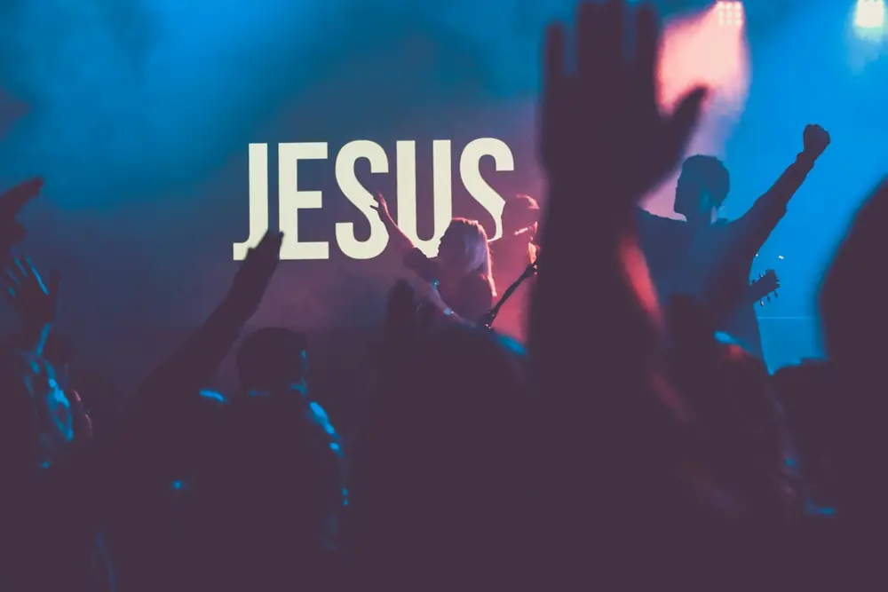

Iglesia Faro de Luz · Asambleas de Dios
Faro de Luz Radio
La fe que ilumina tu vida.
Una iglesia que se reúne cada día de la semana, y una radio que estamos preparando para llevar la Palabra de Dios a más corazones.
Fotografía ilustrativa
Próximamente · En preparación
Faro de Luz Radio
Estamos preparando nuestra señal por internet. Todavía no hay transmisión en vivo; cuando esté lista, el reproductor aparecerá aquí.
en preparación Avísame del lanzamiento
Programación y actividades
Siete días, un mismo corazón.
Estas son las actividades de la iglesia durante la semana. Los horarios se publicarán cuando estén confirmados. No son programas de radio.
-
Lunes
Matutino
Comienza la semana en la presencia de Dios.
Horario por confirmar -
Martes
Vigilia
Una noche para orar y adorar juntos.
Horario por confirmar -
Miércoles
Estudio bíblico y discipulado
Para nuevos creyentes que dan sus primeros pasos en la fe.
Horario por confirmar -
Jueves
Retiros y talleres
Enseñanza bíblica para crecer en comunidad.
Horario por confirmar -
Viernes
Cultos de ministerios
Cada ministerio se reúne para servir y crecer.
Horario por confirmar -
Sábado
Culto de niños, adolescentes y jóvenes
Un espacio para las nuevas generaciones.
Horario por confirmar -
Domingo
Cultos evangelísticos
Una invitación abierta a conocer a Jesús.
Horario por confirmar
Agenda semanal
| Día | Actividad | Horario |
|---|---|---|
| Lunes | Matutino | Por confirmar |
| Martes | Vigilia | Por confirmar |
| Miércoles | Estudio bíblico y discipulado para nuevos creyentes | Por confirmar |
| Jueves | Retiros y talleres de enseñanza bíblica | Por confirmar |
| Viernes | Cultos de ministerios | Por confirmar |
| Sábado | Culto de niños, adolescentes y jóvenes | Por confirmar |
| Domingo | Cultos evangelísticos | Por confirmar |
¿Quieres saber el horario? Escríbenos.
Mensajes bíblicos
Palabra para tu día.
Versículos para acompañarte. Texto bíblico: Reina-Valera 1909.
Juan 8:12«Yo soy la luz del mundo»
Salmos 119:105«Lámpara es á mis pies tu palabra, y lumbrera á mi camino.»
Salmos 46:1«Dios es nuestro amparo y fortaleza, socorro bien presente en las angustias.»
Mateo 11:28«Venid á mí todos los que estáis trabajados y cargados, que yo os haré descansar.»
Mensajes del pastor
Enseñanza que nos acerca a Dios.
Este espacio está preparado para los mensajes y predicaciones de nuestro pastor. Aún no hay mensajes publicados en esta nueva web.
En preparación
Los mensajes aparecerán aquí cuando se publiquen.
La Biblia
¿Por qué estudiar la Biblia?
Estudiar la Biblia nos acerca al corazón de Dios, fortalece nuestra fe y nos guía en cada decisión de la vida. En ella encontramos consuelo en los momentos difíciles, sabiduría para vivir correctamente y esperanza para nuestro futuro.
La Palabra de Dios es luz que ilumina nuestro camino y alimento para nuestra alma.
Lector bíblico · en preparación

Quiénes somos
Iglesia Faro de Luz — Asambleas de Dios
Iluminando vidas a través de la Palabra de Dios, llevando esperanza a cada corazón.
Nos reunimos de lunes a domingo para orar, aprender la Biblia, servir y compartir el mensaje de salvación con niños, adolescentes, jóvenes y familias.
Faro de Luz Radio nace como una extensión de esa misión: una señal de esperanza por internet.
Noticias y actividades de la iglesia
Lo que vive nuestra comunidad.
Aún no hay noticias publicadas. Cuando la iglesia comparta anuncios o eventos especiales, aparecerán en este espacio.
Contacto y peticiones de oración
Tu voz también es importante.
Comparte tu petición de oración o escríbenos para cualquier consulta. Tu mensaje se envía por correo electrónico a la iglesia.
- Dirección
- C/ Principal Padre Granero, No. 10